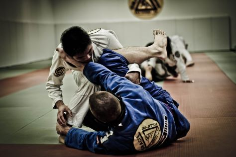

Karate
Karate "the art of the empty hand" founded in ancient Okinowa as a form of self defence through much evolution created a formidalble martial art. Specialising in stand up combat karate uses fast movement to control an attacker while using a variety of kicks, punches and sweeps to attack back. Karate has many variations some of which have been specialised for sport however, our kyokoshin style of karate is sure to be used as an effective combat system being the "toughest karate form in the modern day".
Muay Thai

Becoming prevelant in the late 20th century muay thai is the art of 8 limbs. Punches, kicks, knees and elbows Muay Thai is a deadly standup arts capable of devastating any opponent.
Judo
Focused on throws and grappling Judo is a formidable martial art. A Judoka will trip, slam and submit most opponents with violence and pure unrivaled strength and power.
Jui-Jitsu
With a vast array of techniques used to manipulate those bigger. Taking the opponents power and turning it against them resulting in a jui jitsu practicioner coiling like a snake and submitting any opponent they have placed in their grasp.